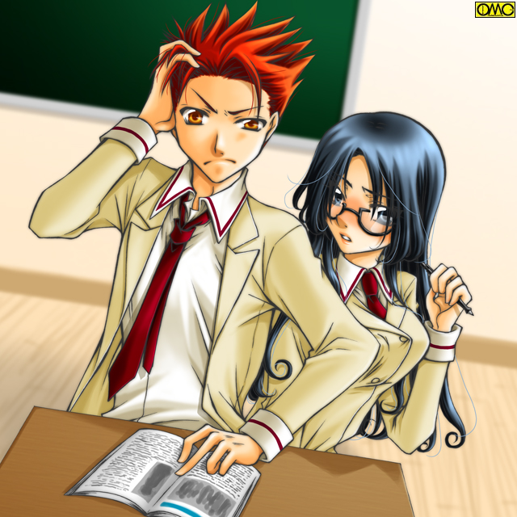

第２話「Ｇｅｔ Ｗｉｌｄ」Ｐａｒｔ３
結局のところ詩穂理は四球を選んだ。
投げていた恭兵も下手投げ。大きめのソフトボールという慣れない物に加えて、詩穂理のボディに動揺してしまっていた。
何しろギャップが激しい。お堅い「委員長」が「エロボディ」で。
（これまでノーマークだったけど…でもやはり僕としてはまりあか栗原先輩が好みだがな）
そして当然のように代走がでる。お役御免でほっとため息の詩穂理。
隠し続けなくてよくなったのでそれも大きい。
素顔はともかくサラシの胸は窮屈でたまらなかった。
体育の授業が終わり更衣室へと向かう生徒たち。
詩穂理も例外ではないがその背中からなぎさが声をかける。
「委員長」
呼び止められて振り返る。なぎさが駆け寄ってくる。
「綾瀬さん？ はい。なんでしょう」
立ち止まり向かい合う二人。
「うーん。本題に入る前にさ、あんたのこと『詩穂理』って名前で呼んでいい？ どうも『委員長』は堅苦しくて。あたしのこともなぎさって呼び捨てにしていいから」
ざっくばらんに話しかける。堅いのが苦手らしい。
「わかりました。綾瀬さん」
そんななぎさの申し出に対してにっこりと笑みを。嫌味のない純粋な笑みだ。しかしなぎさは膨れる。
「……ちょっと」
なぎさの短い抗議で詩穂理は「要請」を理解していなかったことに気がつく。
「あ。ごめんなさい。私あまり慣れてなくて」
「そうかもね。あんた堅いもん」
身も蓋もないがそれが逆に詩穂理の固さを取った。
「よければ私はこういう具合に呼ばせていただきたいのですが？ さん付けの方が楽なんです」
「なんか肩こりそう…あんたがそっちの方がいいってんなら止めないけど」
「ありがとうございます。それでご用件は？」
この時点では殆どが更衣室へと収まっていた。なぎさは意図して人がいなくなるのを待っていたようだ。
「詩穂理。あんた…風見君のことが好きなんでしょ？」
ぼんっ。そんな音がしそうなほど瞬間的に赤くなる詩穂理。
「な、ななななな何を突然？」
普段の堅さはどこへやら。「恋する乙女」がそこにいた。
「あーもう。かわいいなぁ」
慌てふためく様子がである。なぎさには別に「そっちの趣味」はない。
「ど…どうしてわかったんですか？」
赤い顔で上目遣い。加えて美人で巨乳。普段とのギャップ。なぎさが男なら陥落しそうな表情。
「隠していたつもりだったの？」
実際、詩穂理の思いは誰が見ても丸わかり。気がついてないのは当事者の裕生だったりする。
「よほど胸のサイズの方が意表を突かれていたよ。いやぁ。でかいね。あたしも自信あったけどまけたわ」
「やめてください。気にしてるんですから」
芝居ではない素振りの詩穂理。
「なんで？ そんなに立派なのに」
本気で不思議そうなポニーテールの少女。
「私もＤくらいまではそう思ってたんですけど、それを超えるとなんだか男の人の視線が気になりだして。これって自意識過剰でしょうか？」
「うーん。意識もするよね。そりゃ」
誇張ではなくメロンのようなサイズの胸である。
「おまけに誰に相談してもわかってもらえません」
「そりゃあ胸のない悩みならわかる女子は多いけど、胸の大きな悩みなんてほんと限られているしなぁ。スタイルもいいし。そりゃやっかみも受けるよね」
「『巨乳』なんてまるで病気みたいにいわれて」
心底嫌そうにため息をつく。ポーズや芝居じゃない。
物には程よい程度と言うものがある。詩穂理に言わせるとここまで大きいとグロテスクの一歩手前となる。
「巨乳」よりはどこにでもいる「太った女」の方がまだマシで、太く見えるのを承知でウエストを強調しないようにしていた。
余談だがそれは私服にも現れている。
Ｔシャツやブラウスはまず着ない。着ても裾はスカートの中に入れない。
裾を入れれば胸が目立つからである。
裾を入れないから胸から下はそのまま落ちる形。体形がわかりにくい。
そのため普段着はジャンバースカートが多かった。
「でもさ。素顔も綺麗だったしスタイルもいい。それなら男は選り取りみどり…とまでは行かなくても、風見君も迫られて悪い気はしないんじゃない？」
なぎさがややしつこい感じだが詩穂理はそれに気がつかない。
「そうでしょうか…」
褒められた部分が全てコンプレックスである。しかも同情してもらえない。
「（風見君に）コクったの？」
なぎさのその問いに対して詩穂理は首を横に振る。
「なんでよ？ あんた綺麗だって。自信持ちなよ」
「告白なんて……そんなことをしたら…もう元の関係に戻れなくなりそうで」
友達より近く恋人には遠い微妙な距離。幼なじみという特別な関係。
まだその心地よい場所にいたかったのが本音。
「…………そうだね。ちょっと恐いよね」
自分も臆してしまっているなぎさ。だから気持ちは理解できた。
「でも親密にはなりたいでしょ。それじゃさ、あんた運動はダメみたいだから彼にコーチを頼むのはどう？」
「コーチ？ でも…私の運動神経の鈍さは半端じゃなくて」
「それを根気よく教えてくれるとしたら脈ありだよ」
思案する詩穂理。
「そう……ですね。やって見ます。綾瀬さん」
段々と前向きになってきたらしい。
「がんばってね」
伝えるだけ伝えたら駆け出すなぎさ。
一見美しい女の友情だが真意としては
（これで委員長…詩穂理と風見君がくっついてくれたらあたしには付きまとわれなくて済むかも）
ちゃっかり打算が働いていた。
とある道場では激しい稽古が一段落していた。休憩中。
道場の主である風見哲也はふと上を見上げる。そこには亡き妻の笑顔の写真が。
（純子……お前がいってからもう十年になるか。子供たちは……特に千尋は元気だ。安心して眠ってくれ）
それだけ思うと現実に戻りかかる。しかし立ち止まる。
（なんでオレはこんなことを考えたんだ？ 命日でもないのに？ 虫の知らせと言う奴か？）
哲也は答えを求めるように亡き妻の遺影をもう一度見上げる。
そのころ。今度は一年Ｄ組が体育の準備で更衣室へと移動していた。
「さぁーっ。体育よ。天気がいいから気持ちよさそう」
ひときわ元気な千尋だった。傍らには憂鬱そうな双葉。そして笑顔のアンナ。
「チヒロ。スポーツ万能で羨ましいです」
多少たどたどしいがコミュニケーションには充分な日本語でアンナが話しかける。
１５歳。まだあどけなさが残る顔。金色の髪を二つに分けて左右にたらす。根元は小さな赤いリボン。
笑うと「牙」と揶揄される八重歯が覗く。
海のような青い瞳は彼女が日本人でないことを改めて思い知らせる。若干きつい印象のあるつり目だ。
しかしその愛らしい容姿。そして性格が彼女とクラスメイトの距離を縮めた。
「本当だよね。私なんてスポーツダメだもん」
セミロングの少女。大地双葉。
顔立ち自体は極端にいいわけではない。
だがその儚げな印象が彼女を美少女として認知させていた。
それは、兄に対する禁断の恋なのか？
「双葉はお料理できるから凄いじゃん。女の子なら誰でも持ちたがるスキルだよ」
二つのお下げ。そばかすを散らした顔が実年齢より若く見せる風見千尋。
「それにあたし別にスポーツ万能じゃないよ。実は泳げないし」
「えーっ」
やや大仰に二人の少女は驚く。
「なによう。あたしだって苦手なスポーツあるよ」
「でも意外。千尋ちゃんってスポーツなら何でもいけると思ってた」
「チヒロ。水が恐いですか？」
「んもう。アンナ。猫じゃあるまいし」
「ううん。双葉……アンナのいう通りなんだ。水が恐いの」
快活な印象が一発で消えた。沈んだ…既に誰かを「見送った」者の表情だ。
「千尋ちゃん……」
足すら止まる。だが
「さっ。行こう。遅れるよっ」
当の千尋が駆け出した。
五時間目が終わり後は最後の英語を残していた。
「風見。お前大丈夫か？」
「何が？」
一年のときに同じクラスだった男子。沼田が話しかける。
「今日の英語。お前当てられるんじゃなかったっけ？」
前回のときに予告されていたのだ。それを思い出して青くなる裕生。
「げっ。やべ。何にもしてねぇっ」
スポーツ万能な彼だが机に向かうほうは苦手だった。
彼は慌てて周りを見渡す。そして目的の人物を見つけた。
「シホーっっっ」
当の詩穂理はクラスの中で幼なじみそのものの呼び方をされてドギマギする。
「か…風見君っ。だからクラスではその呼び方はやめてくださいと何度言えば」
「いいじゃんかよ。昔からなんだし。それよかシホ。頼むっ。ここ。ここ教えてくれ」
予告されていた英文である。訳すように言われていた。
「やらなかったんですか？」
「いやぁ。覚えちゃいたんだけどな。ロープスライダーのことでいっぱいで」
「……仕方ありませんね。もう。教えてあげますから」
「おう。恩にきるぜ」
乗りの軽さに苦笑する詩穂理。
「それじゃはじめましょう」
「おう。えーッと椅子は…」
教科書を一緒に見るならどうしても隣同士になる。詩穂理の両側の生徒は席をはずしてなかったので椅子がない。
立って見るにはさすがに遠い。中腰はいくら若くても堪える。だから彼の選択は
「シホ。半分借りるぜ」
詩穂理の座っていた椅子の半分に腰掛ける。当然密着することになる。
（えええええっ？）
思う相手がこの近距離。パニックに陥るなという方が無理な話である。
体育以外の学業は満遍なく、それも高レベルでできる詩穂理もこの状態では力を発揮できない。
（ど…どうしよう…頭真っ白だよ…きっとほっぺた赤いし）
「どした？ シホ。顔が赤いぞ。熱か？」
とことん鈍感である。
「あ…ううん。なんでもないの。えーっとね。これは」
彼女は教えることに集中しようとした。だが無理だった。
裕生の腕が「Ｇカップ」に当たっていたのだ。それにも気がつかない。
詩穂理は困り果ててしまった。

このイラストはＯＭＣによって作成されました。
クリエイターの藤本渚さんに感謝！
そして周辺の男子の殺意が裕生に集中していたことも。
（か…風見。布越しとは言えどＧと密着…）
（そんなおいしい状況でなんだその涼しい表情は？）
勉強に集中している二人が傍目には仲睦まじく見えたりする。
（これで詩穂理の思いに気がつかないってんだから…スポーツやアクション以外の勘はとんでもなく鈍いよね。なんか詩穂理が気の毒になってきたよ）
けし掛けていたなぎさはそんなことを思っていた。
時間が流れ放課後に。
裕生は予定がなかった。だから帰ることにした。
（おっ）
下駄箱でなぎさを見つけた。
その抜群の運動神経と長身。そしてスレンダーな体躯からしつこいほどにスーツアクターへ勧誘している相手である。
当然ながらここでも行動を起こす。
「綾瀬。今帰りか？ どうだ。俺と一緒に帰らないか？」
もちろん「スカウト」狙いだ。
なぎさも一年のときに散々付きまとわれてわかっている。だからあしらい方も心得ている。
「ごめん。用事あるんだ」
しかめっ面など間違ってもしない。本当に悪そうに謝る。
「そっか。じゃ仕方ないな」
なぎさへのアプローチ。失敗。
中庭から駐輪場へ行きかけたら優介がいた。
「風見君。今帰り？ ぼくと一緒に帰らない？」
目をきらきらさせてアプローチをかけてくる。まるで「恋する乙女」である。
「悪い。そういう気分じゃないんだ」
まったくの本音である。
「うーん。そういうクールなところがまたたまらない。いいよ。君の意思を尊重する。またね」
水木優介。撃退。
駐輪場では赤い自転車と共に詩穂理がたたずんでいた。
「どうした？ シホ」
きょとんとして訪ねる。
「あの…風見君。一緒に帰らない？」
なぎさには逃げられた。優介は追い払った。特に予定もない。
「そうだな。家も近いし。同じ帰り道。自転車同士で行こうか」
名づけるなら下校サイクリング。
二人は走り出した。
性能も整備も差のある自転車だがなんとか詩穂理はついていっていた。
「シホ…それじゃ自転車が泣くぞ」
「だ…だって…あまりスピードを出すと」
「スピード出した方が安定するんだよ」
いっぱいいっぱいの詩穂理はその明晰な頭脳が動いてなかった。
歴然とした差のある二人なのに会話が出来ていることに。
裕生がちゃんと自分に合わせていることに。
「自転車が泣くぞ」と言う言葉も、遅い詩穂理に合わせているため自身が存分に走れないことから出ていた。
おもむろに先行していた裕生が止まった。
「風見君？」
詩穂理も自転車を止める。
「シホ。休み時間に勉強見てくれた礼だ。今度は俺が自転車のコーチをしてやる」
「えっ？ 私は……」
反射的に「特訓」を断ろうとする。そのときになぎさの言葉が頭をよぎる。
「でも親密にはなりたいでしょ。それじゃさ、あんた運動はダメみたいだから彼にコーチを頼むのはどう？」
（これはチャンスかもしれない……）
「そ…そうね。いつもいつも自転車を倒しちゃって傷だらけだし」
「ホントだよ。オレのよりハードな乗り方してないか？」
裕生はスタント志望だけにそれが随所に現れている。
自転車の乗り方も迷惑の掛からない位置ならアクロバティックにやってしまう。
それだけに傷が多いが、詩穂理は単にヘタでいつも傷つけている。
「よし。じゃあ河原に行こうか。ホントは校庭がいいけど今日は野球部が練習してるしな。河原の土の上なら多少こけてもお前も自転車も傷つかないし」
「う…うん（こけるの前提って…どんなハードな練習する気かしら？ それとも私ってそこまでの運動音痴？）それじゃいきましょうか」
河原は整備されて様々な施設があった。
野球用のグラウンド。サッカー用のグラウンド。そして自転車のコースも。
最初はそこで練習のつもりだったが曲線が多くて詩穂理がそのたびにふらつく。
他の利用者の迷惑になってきたのでコースではなく何もないところを走ることにした。
そこはさすがに整備されてなくデコボコであった。
そのためさらにふらつく詩穂理。
「きゃっ」
可愛い悲鳴をあげつつ派手に転倒。
「おい。大丈夫か？」
恋愛には鈍くてもケガとかいう事態にはさすがに反応が早い。
「うん。平気。私も自転車も」
むしろ心配してもらえたのが嬉しかった。
「ちょっと休むか」
土手のほうへと移動して並んで腰掛ける。
思いがけず下校デート。そして二人で並んで座るというシチュエーション。
なぎさもいないから裕生の興味を奪う存在もいない。
だがそうなると今度は緊張が走る。
（うー。どうしよう。意識しちゃって…何か話題が）
散々探して思いついたのは朝のこと。
「あの…風見君はどうしてあんな無茶なことできるの？」
朝。映画研究会のアピールで行ったスタント。ロープスライダーをさしている。
「練習はしてるんだぜ。オヤジは『お前にはまだ早い』なんて言うけどな」
裕生の父はかつてはスタントマンだった。
現在は殺陣を中心に後進を育ている。
裕主その中に混じり稽古している。サラブレッドといわれるほど彼は筋がよかった。
「オヤジは昔ヒーローだった。オレの名前もそこからつけられた」
真剣な表情になる裕生。詩穂理の期待していた甘い雰囲気はなくなってきた。
「オレはヒーローになりたいんだ。オヤジがやめちまったヒーローに」
「風見君……」
詩穂理にとって裕生が夢を語るその表情を見るのは、甘い雰囲気より望んでいたことかもしれない。
「シホ。ヒーローってのはな。どんなピンチでも絶対に生きて帰るんだ。そして人を助ける。現実には難しくてもテレビのヒーローはそうなんだ。オレはそれになりたい。だからあの程度は出来ないとな」
「無茶だ」と止めるべきだと思う。しかしその熱い表情を見ていると言い出せない詩穂理だった。
「風見ッ！」
１０メートルほどの距離から少年が名を叫ぶ。
二人の時間はそれで終わった。
「この声は？」
裕生が振り返ると背が高めの学生服の少年は腰だめに構えていた両手を突き出す。
「龍気炎」
裕生はそれを詩穂理を庇いつつかわす。
体勢を立て直すと上着に手をかけ
「キャストオフ」
脱ぎ捨てる。
そして少年に向かって走り出す。飛び上がり
「風見キック！！」
少年目掛けてジャンピングキックを放つ。
しかしそれを少年は右腕で弾く。
至近距離で対峙する裕生と少年。その表情が緩む。
「久しぶりだなぁ。風見」
「とんでもない挨拶だな。上条」
二人は大声で笑い出す。その様子を赤い髪のお下げの少女がきょとんとして見ていた。
「上条君！？」
思いがけない旧友の登場に驚きを隠せない詩穂理。
「やぁ槙原。久しぶり」
少年の名は上条明。裕生。詩穂理とは中学の同級生だった。
裕生。そしてもう一人の少年とはオタクトリオと揶揄される間柄だった。
そう。顔立ちこそ普通の少年。割と筋肉質でスポーツマンにも見えるが、彼は重度のオタクだった。
裕生が特撮一辺倒なのに対して彼は全般的であった。
「たまたまこっちきたら懐かしい顔がいてさ。秋にあって以来だよな」
「そうだな。御崎とのボクシング勝負はどうなったんだ？」
「勝てたよ。何とかね」
御崎と言う少年が「もう一人」だった。
「あの……上条君。そっちの人は？」
上条にくっついている少女の紹介を詩穂理は求めた。
かなりの小柄。胸など小学生で通りそうである。
赤い髪が三つ編みのお下げになっている。
仔猫を連想させる顔立ち。特につり目が。
しかしきつい印象はまったくない。それは幼い顔立ちのせいだろう。
「はじめましてぇ。ボク若葉綾那ですぅ。明君の彼女」
満開の笑顔での発言。
「えーっっっっっ」
裕生と詩穂理。揃って驚いた。
「どうした？」
「か…上条。お前に彼女が？」
「あの２次元にしか興味のなかったあなたが？」
さりげにひどい二人である。
「うん…まぁ…気がついたら…好きだったらしい」
芝居がかっているのが特徴の彼なのだが、その余裕がないほど照れていた。
「えへへへ」
ジャンパースカートにボレロという制服姿の綾那も照れている。
（あの上条君をこうして恋人に出来るなんて…この女の子。どんな風にしたのかしら？）
裕生同様に恋愛ごとに興味のなかった上条を恋人にした綾那に対して、詩穂理は猛烈に興味を抱き始めた。